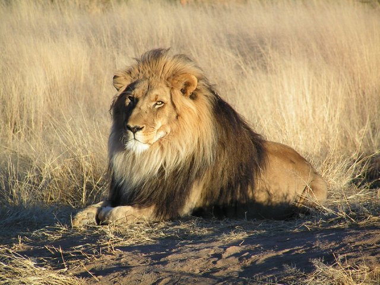

Lions In Their Habitat

Lions are large felines that are traditionally depicted as the "king of the jungle." These big cats once roamed Africa, Asia and Europe. However, now they are found in only two areas of the world and are classified into two subspecies. Asiatic lions live in India's Gir Forest; African lions live in central and southern Africa. Though they look similar, these two subspecies are very different in size, habitat, diet and more.
- The African lion is 4.5 to 6.5 feet (1.4 to 2 meters) long from its head to its rump, and its tail measures from 26.25 to 39.5 inches (67 to 100 centimeters) long. African lions typically weigh 265 to 420 lbs. (120 to 191 kilograms).
- Asiatic lions tend to be much bigger, according to the World Wildlife Federation (WWF). They weigh 300 to 500 lbs. (120 to 226 kg) and are 6.56 to 9.18 feet (200 to 280 cm) long. Their tails measure 23.62 to 35.43 inches (60 to 90 cm).
- Male lions are generally larger than females and have a distinctive mane of hair around their heads. The mane's function is to make the male look more impressive to females and more intimidating to other males, according to the San Diego Zoo. The mane also protects the male's neck during fights over territory or mating rights.
Next page